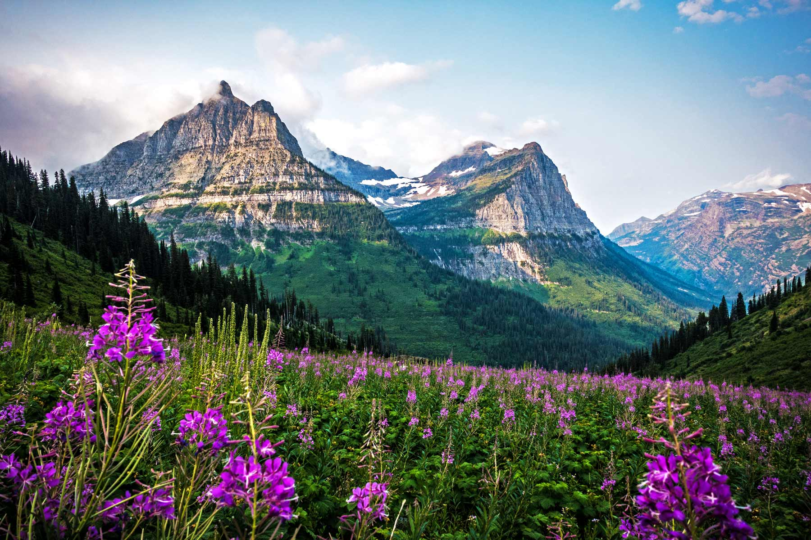

About This Project
“Living Impressions: Glacier National Park” is a generative landscape made with p5.js. This was an assignment for my Generative Design class, inspired by Glacier National Park.
Each reimagination uses a new seed to produce a different arrangement of mountain silhouettes, hills, trees, clouds, and wildflowers while keeping a consistent palette and composition.
Challenges included adding depth without visual noise, shaping clouds so they feel visually interesting, animating tree sway without breaking composition, and keeping output stable across different canvas sizes. I used layered shapes in back-to-front order, seeded randomness for repeatable outputs, subtle gradients for form, and low-amplitude noise over time for motion.